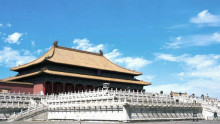
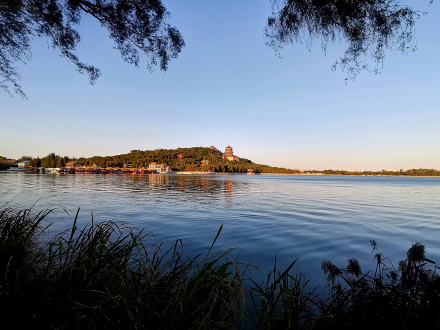

| 北京 | |||||
|---|---|---|---|---|---|
| 首页 | 历史沿革 | 地理环境 | 交通运输 | 风景名胜 | 历史文化 |
| 风景名胜 | |||||
概述 故宫  2021年，北京市接待旅游总人数2.6亿人次，比2020年增长38.8%；实现旅游总收入4166.2亿元，增长43.0%。其中，接待国内游客2.5亿人次，增长38.9%，国内旅游总收入4138.5亿元，增长43.7%；接待入境游客24.5万人次，下降28.2%，国际旅游收入4.3亿美元，下降10.4%。 [ 北京是唯一入选世界15大购物之都的内地城市，拥有百余家大中型购物商场。王府井大街、前门大栅栏、西单商业街是北京的传统商业区；国贸商城、东方新天地、中关村广场。琉璃厂或潘家园的古玩城拥有各类古玩。秀水街和雅秀服装批发市场销售各类服装。景泰蓝、玉器、丝绸刺绣等历史悠久；民间手工艺品，如泥人、京剧脸谱、风筝、剪纸等物美价廉，都可以作为馈赠亲友的礼品。 |
|||||